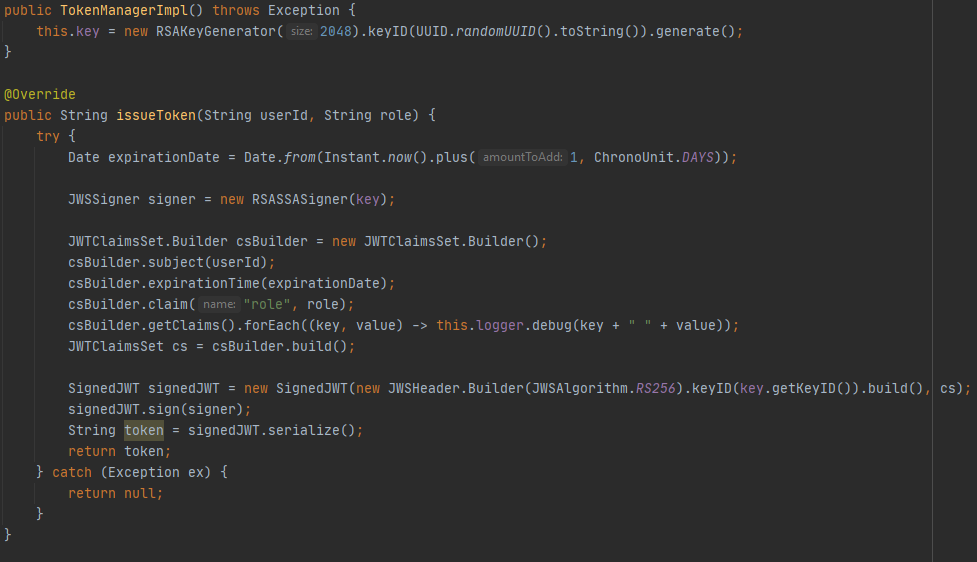
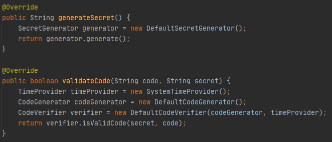
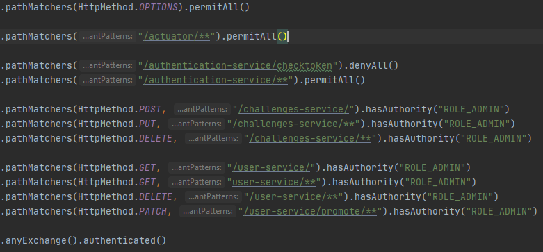

Project description
I have implemented the application's core functionality. The users can register and log in with 2 factor authentication (via an authenticator app). The authorization is handled via JWT tokens. These tokens are signed with an RSA 2048 key which is randomly generated on startup by the authorization microservice. The user can also register a team while creating his own account.
When logged in, the user can see all challenges and submit flags to those challenges. The solved challenges will be shared between all users in the same team. The user can also visit the scoreboard page. There he'll find all teams with their scores.
As an administrator, you'll also have access to the admin dashboard. In this dashboard you can see all users and challenges. Here you can also create, update and delete challenges. You can also delete user and promote them to administrator.
For the deployment, I've created a Ubuntu 20.04 server. On this server I've install Docker and Docker Swarm to make sure that I can add extra scalability. Then I've built my images via Dockerhub, so I can easily fetch all required images and with the Docker-Compose, the deployment is now solid and good working.
The full source code can be found on Github.
Architecture
Since the DDOS is the biggest treat in my application, I've chosen for a microservices architecture. Microservices are easily scalable. If I notice that there is too much load on one particular microservice, I'll add an extra instance of the application in Docker Swarm.
So for this application, I've created six microservices:
- Gateway
- Eureka Discovery
- Authorization
- Challenges
- User
- Team
All microservices are communicating through the gateway. The gateway handles everything, like temporary lockouts and load balancing. For authorization, the gateway sends an REST request to the authorization service to validate the JWT token. The authorization service also handles registering and logging in.
Authentication/Authorization
This chapter can be split into four different categories: user creation, JWT tokens, 2fa and the gateway authorization.
User creation
A user can be created by sending a POST request to /authorization-service/auth/signup with as parameters the username, password and team. When the team isn't created yet, a new team is created. But when a team already is created, the player will join the already existing team. Sending this request will already return a JWT token. In the frontend, this isn't used due to lack of time. Another string that is returned is the secret key for the two factor authentication. A QR code is generated containing the following URL so that a authenticator app like Google Authenticator can save it easily: 'otpauth://totp/KekCTF:USERNAME?secret=TOKEN&issuer=KekCTF'.
JWT tokens
An JWT token has three fields of data, all encrypted with Base64: header, payload and verify signature. In the header, you would normally put the algorithm, in this case RSA. For the payload, you'll get a 'sub' which is the subject. In my application, I store the UserID there. Then you'll get an role which contains the role of the user and lastly, you'll get 'exp' which stands for the expiration date of the token. For the verify signature part, an encryption is used. I use RSA2048 as encryption and this key is randomly generated. This means that if someone tries to change the payload, the signature wouldn't be valid anymore.
2fa
To log in, you're required to have an authenticator app. There are three fields: username, password and Authenticator code. When you log in, the code is validated with the secret key, as well as the hash is matched with the password of the username. When everything is correct, you'll get a JWT token returned.
gateway authorization
When a request enters the gateway, it has to go to a series of checks to validate if the requested URI requires a certain kind of authorization. Then it sends a REST request to the authorization service. The authorization service validates if the signature is correct and returns the userid and the role. Then the gateway knows that the user is either authorized to use a URI or is not authorized to do the action he is requesting.
